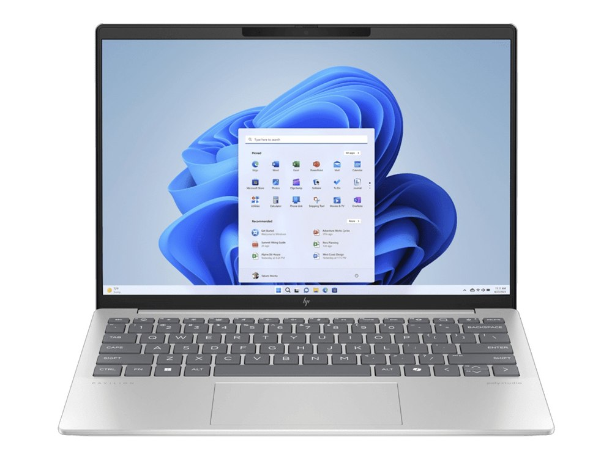
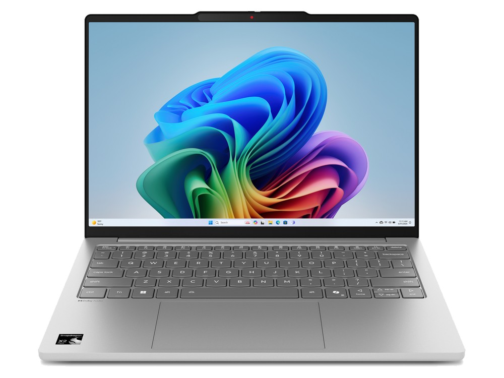
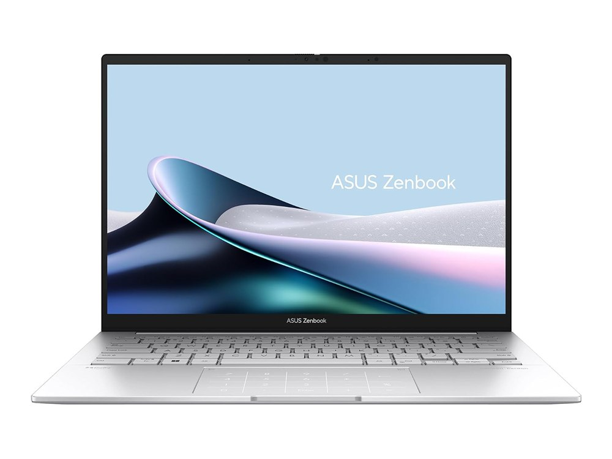
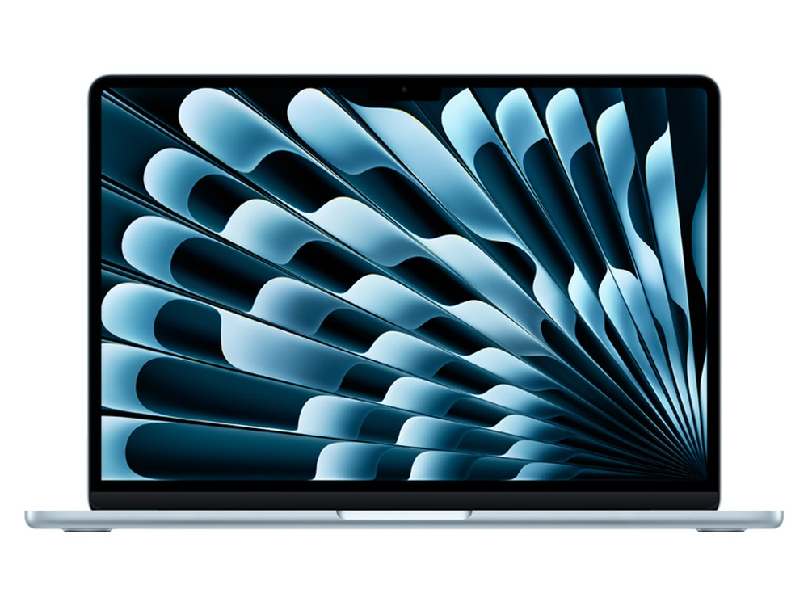

Entre un portátil de 1,2 kg y otro de 1,8 kg hay poco más de medio kilo. En la tienda no parece mucho; en la mochila, ocho horas al día, se nota a la segunda semana. Por eso esta guía parte del peso y, dentro de los equipos ligeros, mira lo que más cambia el día a día: cuánto dura la batería, cómo se ve la pantalla y qué sistema operativo usas.
Qué mirar en un portátil ligero
- El peso de la ficha no es el de tu mochila. El fabricante pesa solo el portátil. Suma el cargador: entre 200 y 400 g según el modelo. Un cargador USB-C pequeño compensa.
- Autonomía real. La cifra oficial se mide con brillo bajo y tareas suaves. Con uso normal (navegador, documentos y vídeo), cuenta con algo más de la mitad.
- Pantalla de 13 o 14 pulgadas. Es el tamaño que mejor equilibra peso y comodidad. Por debajo cuesta trabajar con dos ventanas; por encima, el peso sube rápido.
- Puertos. Los equipos finos suelen traer menos conexiones. Comprueba que tenga al menos dos USB-C y, si usas pendrives o un ratón con receptor, un USB-A.
- Procesador ARM o x86. Los portátiles con Snapdragon duran mucho más, pero algunos programas antiguos, controladores de impresoras y juegos con antitrampas no funcionan o van peor. Si dependes de un programa concreto, compruébalo antes.
Cinco opciones por debajo de 1,4 kg

Acer Swift Go 14 — 749 €
El más barato de la lista y, aun así, con pantalla OLED 2.8K a 90 Hz, algo poco habitual a este precio. Rinde con soltura en clase y en la oficina, y la autonomía oficial de 10 horas cubre una jornada tranquila.
Piensa dos veces si: pasas el día fuera sin enchufe; es el de menos batería del grupo.
Ficha del Acer Swift Go 14 → Ver precio en Amazon →
HP Pavilion Aero 13 — 799 €
Con 0,97 kg es el único del comparador por debajo del kilo, y la nota de movilidad más alta del catálogo (98 de 100). Pantalla 2.5K de 13,3" y un Ryzen 7 que va sobrado para estudiar y trabajar.
Piensa dos veces si: trabajas muchas horas con hojas de cálculo grandes; 13,3" se quedan cortas para dos ventanas.
Ficha del HP Pavilion Aero 13 → Ver precio en Amazon →
Lenovo IdeaPad Slim 5 13 — 799 €
Lenovo anuncia hasta 28 horas de batería gracias al procesador Snapdragon, la cifra más alta de todo el comparador. Aunque en uso real sea bastante menos, es el que más probabilidades tiene de aguantar dos días de clase sin cargar. Pesa 1,19 kg.
Piensa dos veces si: necesitas un programa de Windows antiguo o muy específico; con ARM, compruébalo antes de comprar.
Ficha del Lenovo IdeaPad Slim 5 13 → Ver precio en Amazon →
ASUS Zenbook 14 OLED — 1.099 €
La nota global más alta de la lista entre los Windows (80 de 100). Pantalla OLED 3K a 120 Hz, 1 TB de almacenamiento y 1,22 kg. Es el que menos cede en cualquier apartado: sirve igual para estudiar que para trabajar todo el día.
Piensa dos veces si: el presupuesto es ajustado; el Swift Go 14 ofrece una experiencia parecida por 350 € menos.
Ficha del ASUS Zenbook 14 OLED → Ver precio en Amazon →
MacBook Air 13" (M4) — 1.199 €
18 horas de autonomía oficial, 1,24 kg y sin ventilador, así que es completamente silencioso. Si ya usas iPhone o te sientes cómodo con macOS, es la opción más redonda para llevar encima a diario.
Piensa dos veces si: guardas muchos archivos en local; 256 GB se llenan rápido y ampliarlo al comprar es caro.
Ficha del MacBook Air 13" (M4) → Ver precio en Amazon →Comparación rápida
| Modelo | Precio | Peso | Autonomía | Ideal para |
|---|---|---|---|---|
| Acer Swift Go 14 | 749 € | 1,32 kg | 10 h | Pantalla OLED con poco presupuesto |
| HP Pavilion Aero 13 | 799 € | 0,97 kg | 11 h | El mínimo peso posible |
| Lenovo IdeaPad Slim 5 13 | 799 € | 1,19 kg | 28 h | Días largos sin enchufe |
| ASUS Zenbook 14 OLED | 1.099 € | 1,22 kg | 12 h | Windows sin concesiones |
| MacBook Air 13" (M4) | 1.199 € | 1,24 kg | 18 h | macOS y silencio total |
Autonomía según el fabricante. En uso real, cuenta con algo más de la mitad.
Fino y potente: los que más rinden por debajo de 1,5 kg
En un portátil ligero, «potente» quiere decir procesador: ninguno de estos lleva gráfica dedicada, así que no son equipos para jugar a lo último. Para trabajar con muchas pestañas, programar, editar fotos o montar vídeo corto, estos son los que sacan mejor nota de trabajo en el comparador sin pasar de 1,5 kg:
- MacBook Air 13" (M5): 95 de 100 en trabajo, 1,23 kg y 18 h oficiales, por 1.429 €. El más potente de los ligeros y sin ventilador.
- Dell XPS 13: 92 de 100, 1,19 kg, por 1.399 €. El Windows más potente de este peso, con 14 h oficiales.
- Samsung Galaxy Book5 Pro 14: 92 de 100, 1,23 kg y 21 h oficiales, por 1.699 €. Pantalla OLED y la mejor batería entre los Windows con Intel.
- ASUS Zenbook 14 OLED: 90 de 100, 1,22 kg, por 1.099 €. El equilibrio entre potencia y precio: casi la nota del XPS 13 por 300 € menos.
Si necesitas más potencia sostenida (exportar vídeo largo, compilar proyectos grandes), el MacBook Pro 14" (M5) sube a 97 en trabajo y 24 h oficiales, a cambio de 1,55 kg y 2.229 €: tiene ventilador y aguanta la carga larga sin bajar el ritmo.
Portátiles ligeros y baratos: por menos de 900 €
Ligero ya no significa caro. Estos seis bajan de 1,45 kg y cuestan 900 € o menos según los precios orientativos del comparador:
| Modelo | Precio | Peso | Autonomía | A tener en cuenta |
|---|---|---|---|---|
| Acer Swift Go 14 | 749 € | 1,32 kg | 10 h | OLED 2.8K; la batería más justa |
| HP Pavilion Aero 13 | 799 € | 0,97 kg | 11 h | El más ligero; pantalla de 13,3" |
| Lenovo IdeaPad Slim 5 13 | 799 € | 1,19 kg | 28 h | Snapdragon: comprueba tus programas |
| MacBook Neo | 799 € | 1,23 kg | 16 h | macOS barato; solo 8 GB de memoria |
| Acer Swift Go 14 AI | 823 € | 1,30 kg | 12 h | Snapdragon con más batería que el Swift Go 14 |
| Lenovo ThinkPad E14 Gen 6 | 899 € | 1,41 kg | 10 h | Teclado de ThinkPad y buena nota de trabajo (90) |
Precios orientativos de referencia. Autonomía según el fabricante.
Todos los portátiles de menos de 1,5 kg del comparador
La lista completa, ordenada por peso. La nota es la del perfil Trabajo (sobre 100), que es la que mejor resume la potencia para uso general.
| Modelo | Peso | Precio | Autonomía | Nota trabajo |
|---|---|---|---|---|
| HP Pavilion Aero 13 | 0,97 kg | 799 € | 11 h | 82 |
| Dell XPS 13 | 1,19 kg | 1.399 € | 14 h | 92 |
| Lenovo IdeaPad Slim 5 13 | 1,19 kg | 799 € | 28 h | 80 |
| ASUS Zenbook 14 OLED | 1,22 kg | 1.099 € | 12 h | 90 |
| MacBook Air 13" (M5) | 1,23 kg | 1.429 € | 18 h | 95 |
| Samsung Galaxy Book4 Pro | 1,23 kg | 1.399 € | 12 h | 91 |
| MacBook Neo | 1,23 kg | 799 € | 16 h | 83 |
| Samsung Galaxy Book5 Pro 14 | 1,23 kg | 1.699 € | 21 h | 92 |
| MacBook Air 13" (M4) | 1,24 kg | 1.199 € | 18 h | 89 |
| Acer Swift Go 14 AI | 1,30 kg | 823 € | 12 h | 76 |
| Acer Swift Go 14 | 1,32 kg | 749 € | 10 h | 80 |
| Microsoft Surface Laptop 7 | 1,34 kg | 1.299 € | 16 h | 90 |
| HP OmniBook 5 14 | 1,34 kg | 1.249 € | Sin dato | 89 |
| Lenovo ThinkPad E14 Gen 6 | 1,41 kg | 899 € | 10 h | 90 |
Precios orientativos de referencia. Autonomía según el fabricante; «Sin dato» cuando no la publica.
¿Y fuera de esta lista?
Si quieres macOS con menos presupuesto, el MacBook Neo cuesta 799 € y pesa 1,23 kg, pero trae 8 GB de memoria: suficiente para clase y ofimática, justo si abres muchas aplicaciones a la vez. Si el presupuesto llega a 1.400 €, el Dell XPS 13 baja a 1,19 kg con pantalla OLED 3K.
Si además de llevarlo encima quieres jugar, ningún equipo de esta lista tiene gráfica dedicada. Echa un vistazo a la guía de portátiles gaming, pero asume que pesarán más de 2 kg.
Preguntas frecuentes
¿Cuánto debe pesar un portátil para llevarlo a diario?
Por debajo de 1,4 kg se lleva sin pensarlo. Entre 1,4 y 1,8 kg es aceptable si no lo cargas todo el día. Por encima de 2 kg ya es un equipo para mover de vez en cuando, no a diario.
¿Un portátil ligero es menos potente?
Para estudiar, ofimática, navegar y videollamadas, no se nota. Donde sí pierden es en juegos y en tareas pesadas sostenidas, como editar vídeo largo, porque tienen menos espacio para refrigerar.
¿Qué es mejor, Snapdragon o Intel/AMD?
Snapdragon gana en batería y en silencio. Intel y AMD ganan en compatibilidad: todo programa de Windows funciona sin sorpresas. Si usas programas de clase o de trabajo muy concretos, la opción segura es Intel o AMD.
¿Cuál es el portátil más fino y potente?
De los que bajan de 1,5 kg en el comparador, el MacBook Air 13" con M5 (1,23 kg, 95 de 100 en trabajo). En Windows, el Dell XPS 13 (1,19 kg, 92 de 100). Si el presupuesto no llega, el ASUS Zenbook 14 OLED se queda cerca (90 de 100) por 1.099 €.
¿Hay portátiles ligeros y baratos que merezcan la pena?
Sí. Por menos de 900 € hay seis modelos de menos de 1,45 kg en el comparador. El Acer Swift Go 14 (749 €) es el más barato y trae pantalla OLED; el HP Pavilion Aero 13 (799 €) es el más ligero, con 0,97 kg.
¿13 o 14 pulgadas?
13 pulgadas si priorizas peso y tamaño de mochila. 14 si trabajas muchas horas con él: el área extra se agradece con dos ventanas y casi no añade peso.
Compáralos con tu perfil
Elige el perfil Moverse y enfrenta dos modelos para ver cuál gana y cuánto cuesta la diferencia.
Abrir el comparador